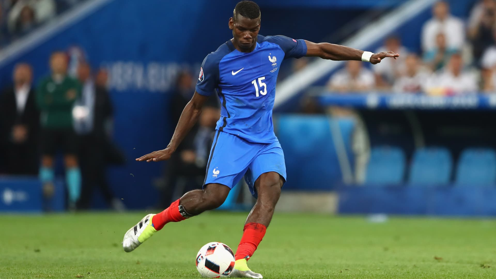

Musculation
pratique la musculation régulièrement pour rester en forme et améliorer ma discipline personnelle.

Football
Le football est mon sport préféré. J'adore jouer en équipe et suivre les matchs importants.

Codage
Dans mon temps libre, je pratique la programmation pour créer des projets innovants et amusants.

Voyage
Découvrir de nouveaux endroits et cultures est une grande source d'inspiration pour moi.